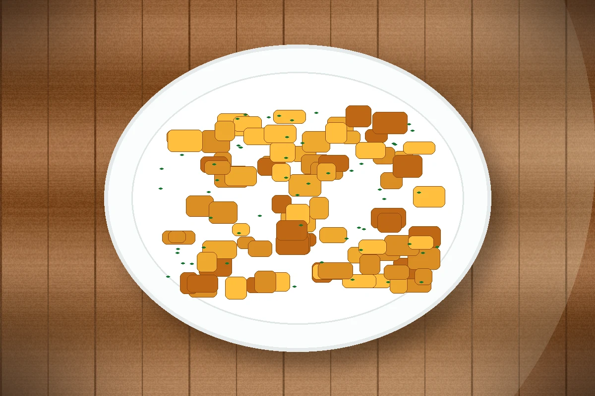

ID recette : 20000101-005
Poêlée de pommes de terre
Une poêlée de pommes de terre dorées, simple et rassasiante, à servir seule avec une salade ou en accompagnement.
Pour une bonne texture, les pommes de terre doivent être bien séchées et saisies dans une poêle chaude avant de cuire plus doucement. L’ail, le persil ou l’oignon peuvent être ajoutés selon les réserves.

🧭 Repères alimentaires
Repères indicatifs à vérifier selon les marques, les remplacements d’ingrédients et les produits réellement utilisés.
🔥 Cuisson indicative
Poêle : 20 à 25 min à feu moyen, en remuant régulièrement.
Ces valeurs sont indicatives : ajuster selon le four, l’épaisseur du plat et la coloration souhaitée.
⚖️ Adapter les quantités
Le calcul adapte les quantités proportionnellement. Les valeurs nutritionnelles restent calculées sur les quantités de base.
🧺 Ingrédients avec quantités
Principaux
- 900 g — pommes de terre
- 2 c. à soupe — huile
Secondaires
- 1 pièce — oignon
- 1 gousse — ail
- 1 pincée — sel et poivre
Optionnels
- 1 c. à café — herbes
- 60 g — fromage
- 100 g — lardons ou restes de viande
👩🍳 Préparation détaillée
- Éplucher les pommes de terre si nécessaire, les laver puis les sécher soigneusement. Les couper en dés réguliers.
- Faire chauffer l’huile dans une grande poêle. Ajouter les pommes de terre et les enrober de matière grasse.
- Laisser dorer quelques minutes sans trop remuer, puis mélanger et poursuivre la cuisson.
- Baisser légèrement le feu, couvrir partiellement et cuire 20 à 25 minutes en remuant de temps en temps.
- Ajouter ail, persil, oignon ou herbes en fin de cuisson. Saler et servir chaud.
💡 Astuce anti-gaspi
Bien sécher les pommes de terre avant cuisson aide à obtenir une surface dorée. Les restes se réchauffent très bien à la poêle.
🔁 Variantes possibles
Ajouter oignon, lardons, légumes en dés, paprika, curry, œufs battus en fin de cuisson ou fromage râpé. Pour une version complète, ajouter une boîte de haricots ou un reste de viande.
🔎 Rechercher cette recette sur Google
🔗 Sources d’inspiration
Liens utilisés pour comparer les techniques, les variantes et les temps de préparation. La fiche reste reformulée et adaptée au projet.
📊 Valeurs nutritionnelles estimées
Estimation indicative. Les valeurs ci-dessous sont calculées à partir d’ingrédients génériques et des quantités de base. Elles ne remplacent pas les étiquettes des produits, ni un avis médical ou diététique. Voir l’explication complète.
Non officiel
| Valeur | Par portion | Pour 100 g |
|---|---|---|
| Énergie | 1402 kJ / 335.0 kcal | 467 kJ / 111.6 kcal |
| Protéines | 9.1 g | 3.0 g |
| Glucides | 43.6 g | 14.5 g |
| dont sucres | 3.9 g | 1.3 g |
| Lipides | 12.8 g | 4.3 g |
| dont acides gras saturés | 4.2 g | 1.4 g |
| Fibres | 5.2 g | 1.7 g |
| Sel | 0.6 g | 0.2 g |
Portion estimée : 300 g. Score simplifié : -5. Indicateur estimé non officiel. Il ne correspond pas à un calcul réglementaire ni à un Nutri-Score officiel.
⚠️ Allergènes et conservation
Allergènes : À vérifier selon les produits utilisés
Conservation : À conserver 24 h au réfrigérateur dans une boîte fermée.
Réchauffage : À réchauffer doucement si nécessaire.
Vérifiez toujours les étiquettes des produits utilisés.
🔎 Filtres associés
Cliquez sur un bouton pour trouver les recettes associées au même champ.
Sous-catégorie : Poelee
Moment du repas : Dejeuner Diner
Équipement : Poele
Repères alimentaires : Sans porc Végétarien Vegan possible Sans gluten possible Sans lactose possible
📱 QR code
QR code vers la fiche en ligne.
https://recettesducoeur.github.io/recettes/20000101-005.html
Sur mobile/tablette, seul le téléchargement PDF est proposé. Sur PC, l’impression conserve les quantités sélectionnées.